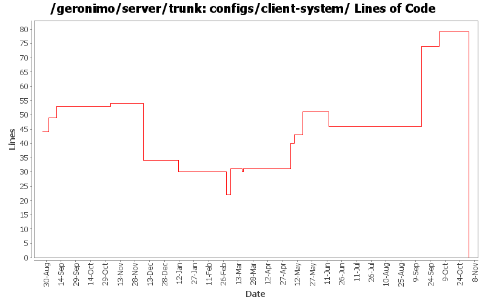

[root]/configs/client-system
 src
(0 files, 0 lines)
src
(0 files, 0 lines)
 main
(0 files, 0 lines)
main
(0 files, 0 lines)
 plan
(0 files, 0 lines)
plan
(0 files, 0 lines)
 resources
(0 files, 0 lines)
resources
(0 files, 0 lines)
 META-INF
(0 files, 0 lines)
META-INF
(0 files, 0 lines)
 plan
(0 files, 0 lines)
plan
(0 files, 0 lines)
 site
(0 files, 0 lines)
site
(0 files, 0 lines)

| Author | Changes | Lines of Code | Lines per Change |
|---|---|---|---|
| Totals | 29 (100.0%) | 138 (100.0%) | 4.7 |
| djencks | 4 (13.8%) | 46 (33.3%) | 11.5 |
| gdamour | 2 (6.9%) | 40 (29.0%) | 20.0 |
| jdillon | 6 (20.7%) | 30 (21.7%) | 5.0 |
| kevan | 5 (17.2%) | 12 (8.7%) | 2.4 |
| jlaskowski | 1 (3.4%) | 6 (4.3%) | 6.0 |
| prasad | 6 (20.7%) | 1 (0.7%) | 0.1 |
| hogstrom | 1 (3.4%) | 1 (0.7%) | 1.0 |
| dain | 1 (3.4%) | 1 (0.7%) | 1.0 |
| akulshreshtha | 3 (10.3%) | 1 (0.7%) | 0.3 |
GERONIMO-3565. Configs distributed amongst framework/configs and plugins
0 lines of code changed in 5 files:
GERONIMO-3496 assemble servers out of plugins
5 lines of code changed in 1 file:
GERONIMO-3453 fix app client, simplify server manifest classpath
28 lines of code changed in 1 file:
* updated copyright date to 2007
1 lines of code changed in 1 file:
Changed trunk to 2.1-SNAPSHOT
1 lines of code changed in 1 file:
Cleanup some bad spec dependencies. The dependency in client-system was causing a NoClassDefFoundError in some circumstances
0 lines of code changed in 1 file:
Fix EJB deployment errors. The ClassLoader used during OpenEJB annotation processing did not include any application dependencies. So, NoClassDefErrors could occur during deployment. Seems to be fixed with these changes
8 lines of code changed in 1 file:
GERONIMO-3141 Avoid a potential deadlock in ClassFileTransformer processing
4 lines of code changed in 1 file:
Refactor the various CLIs such that oprtions parsing and arguments are done prior to boot the
boot configuration.
* Add a geronimo-cli JAR containing all the classes to perform options and arguments parsing. It is included in the lib/ folder and added to the Class-Path manifest entry of the deployer.jar, server.jar and client.jar runnable JARs;
* Use commons-cli to perform the option parsing; and
* add support for an extra verbose level, -vvv, and remap the verbose level as follows: -v -> INFO, -vv -> DEBUG, -vvv -> TRACE.
This fixes GERONIMO-3059 - CLIs refactoring - options and arguments parsing should be done prior the boot of a Kernel to provide a quicker feedback to users if they are invalid
10 lines of code changed in 1 file:
Apply MainBootstrapper boot approach to ClientCommandLine and Daemon to
reduce reliance on lib/ and uniform the way the CLI work.
This fixes GERONIMO-2978 - ClientCommandLine and Daemon improvement to reduce
reliance on lib/.
As part of this change, the RMIClassLoaderSpi implementation has been moved
from geronimo-system to geronimo-kernel as such an implementation must be
in the system class loader and geronimo-system is no longer imported by
the system class loader.
30 lines of code changed in 1 file:
Normalize all configs/*/pom.xml headers
14 lines of code changed in 1 file:
GERONIMO-2735 property substitution file for jsr88, required jar for client-system
9 lines of code changed in 1 file:
GERONIMO-2907 Remove dependency on mx4j
0 lines of code changed in 1 file:
(GERONIMO-2725) Remove geronimo-qname_1.1_spec dependencies, qname is in javase 5 which is required to run 2.0
0 lines of code changed in 1 file:
GERONIMO-2629 Upgrade to J2EE Management 1.1
1 lines of code changed in 1 file:
Upgrade xerces to 2.8.1, GERONIMO-2594 Remove xmlParserApis and xalan
Remove xerces from everywhere except console
0 lines of code changed in 1 file:
GERONIMO-2537 Merge from branches/1.2 onto trunk. I have not reviewed trunk license info. So, it's possible that there are already some deltas which should be reflected in license/notice files. This change updates the general LICENSE.txt and NOTICE.txt files. Note that I've expanded the notice/license files in the root of a source distribution. Also added required copyright to NOTICE.txt files. Note that minimal distributions have an overly broad license/notice files. Also, we have multiple copies of the same general license/notice files. Would be good to reduce these.
0 lines of code changed in 2 files:
Changed version to 2.0-SNAPSHOT
1 lines of code changed in 1 file:
GERONIMO-2537 All Geronimo source files must be brought in line with the new ASF source header and copyright notice policy
The rest of Geronimo sources migrated
6 lines of code changed in 1 file:
Using ${version} instead of ${pom.version} in a feeble attempt to get around ${pom.version} changing to its timestamp version for SNAPSHOT artifacts
5 lines of code changed in 1 file:
GERONIMO-2389 fix some dependency so app client container works
4 lines of code changed in 1 file:
(GERONIMO-2373) Remove usage of j2ee 1.4 uber spec; Applied patch from Bill Dudney... thanks!
11 lines of code changed in 1 file:
(GERONIMO-2331) Updated configs to pull resources from the standard location, clean up some remaining config used to use std locations
0 lines of code changed in 2 files: